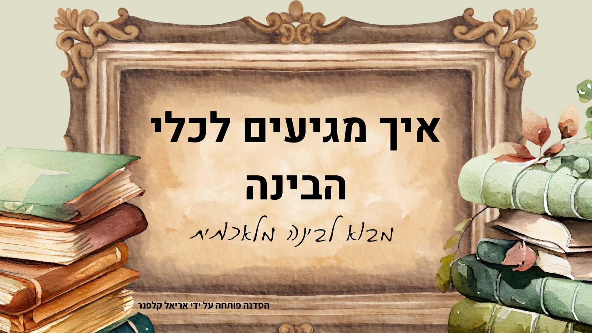
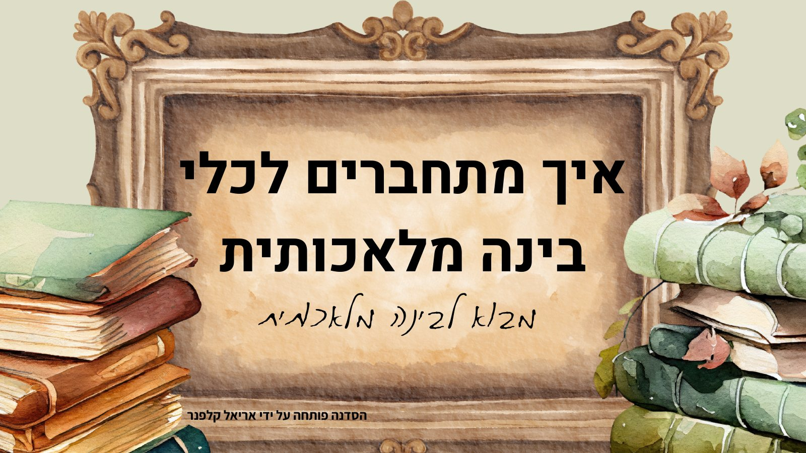

איך מגיעים לכלי הבינה?
לפני שכותבים פרומפט צריך להיכנס לכלי. יש שתי דרכים, ומספיק לבחור אחת מהן.
צפו בסרטון
סרטון עזר לשלב הזה. אחרי הצפייה בוחרים אחת משתי הדרכים.
אם הסרטון לא נטען, אפשר לצפות בו ישירות ביוטיוב.
שתי דרכים להגיע
ליצור פרופיל חדש בכרום
מוסיפים לדפדפן פרופיל נפרד עם האימייל הארגוני, ועובדים איתו לצד החשבון הפרטי.
לשלבים אפשרות 2להגיע לג׳מיני דרך בית הספר הוירטואלי
נכנסים לאתר בית הספר הוירטואלי ופותחים משם את ג׳מיני, בלי להגדיר דבר בדפדפן.
לשלביםיוצרים פרופיל חדש בגוגל כרום
עוברים בין השקפים בחצים או במקשי החצים במקלדת.

הגרסה הכתובה של השלבים (עם תמונות)
-
1
הקלידו בגוגל בית הספר הוירטואלי.
לחצו על התחברות.
-
2
התחברו בעזרת הזדהות אחידה.
-
3
לחצו על אותיות השם שלכם למעלה בצד שמאל.
טיפ: מכאן תוכלו לגשת לאימייל הארגוני שלכם, לקלאסרום, לדרייב שלכם ולג׳מיני (בינה מלאכותית).
-
4
בחלונית שנפתחה לחצו על העתק והעתיקו את כתובת האימייל הארגוני שלכם.
-
5
פתחו כרטיסיה חדשה בדפדפן שלכם.
לחצו על אותיות השם שלכם בצד שמאל.
-
6
לחצו על הוספת חשבון.
-
7
הדביקו את כתובת האימייל הארגוני שלכם ולחצו על הבא.
-
8
התחברו בעזרת הזדהות אחידה.
-
9
לחצו על המשך ויצרנו פרופיל עם האימייל הארגוני.
טיפ: אם אינכם רואים את הפרופיל החדש, לחצו על אותיות שמכם בצד שמאל למעלה ובחרו את הפרופיל החדש.
בהצלחה! הפרופיל החדש מוכן לעבודה.
מתחברים לג׳מיני דרך בית הספר הוירטואלי
עוברים בין השקפים בחצים או במקשי החצים במקלדת.

הגרסה הכתובה של השלבים (עם תמונות)
-
1
הקלידו בגוגל בית הספר הוירטואלי.
לחצו על התחברות.
-
2
התחברו בעזרת הזדהות אחידה.
-
3
לחצו על כלים שימושיים.
טיפ: מכאן תוכלו לגשת לאימייל הארגוני שלכם, לקלאסרום, לדרייב שלכם ולג׳מיני (בינה מלאכותית).
-
4
בחלונית שנפתחה בחרו את ג׳מיני.
-
5
ממתינים.
-
6
זהו, מתחילים לעבוד.
בהצלחה! אפשר להתחיל לעבוד.
הבא בתור: מהו פרומפט
נכיר את ההנחיה שאנחנו נותנים לבינה המלאכותית ואת ארבעת מרכיביה.